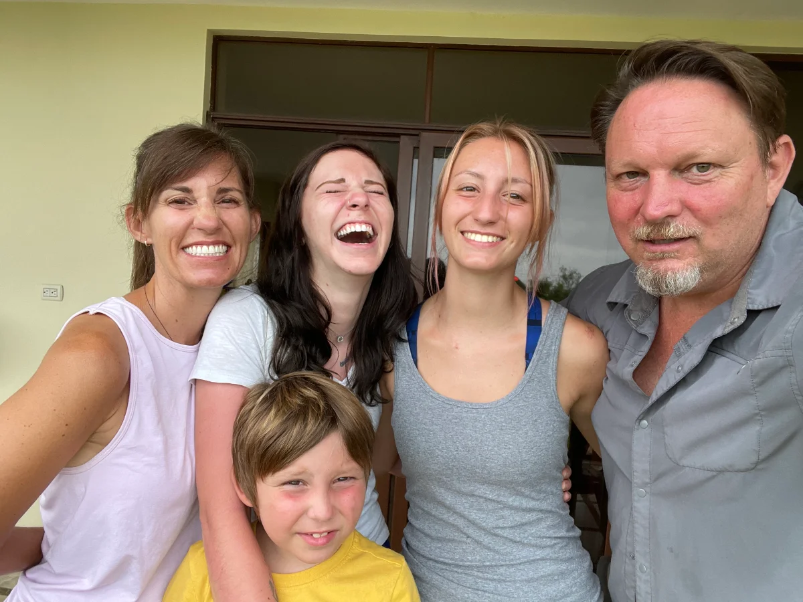

When the person you love has chronic Lyme: a guide for the one helping them decide
If your husband, wife, or someone you love is sick with chronic Lyme and you're the one quietly carrying the doubt, the logistics, and the money math — this is for you. I'm James, Christina's husband. I was the skeptic. Here's what I wish someone had said to me.

If you only read this far
- Being skeptical doesn't make you unsupportive. Someone has to ask the hard questions. That's often the partner's job, and it's a form of love.
- You're carrying more than people see — the research, the money, the fear of getting it wrong. That weight is real.
- You don't have to decide alone, or convince your partner alone. Bring both of you to a free call — skeptical questions included.
- The money feels impossible until you see how people actually do it. Don't let sticker shock make the decision for you before you have the facts.
The job no one sees you doing
When someone has chronic Lyme, everyone's attention — rightly — goes to the person who's sick. But there's usually someone standing just behind them, holding a lot of weight no one names: the spouse or partner. You're the one keeping the household running, reading until 2 a.m. about treatments you'd never heard of, watching the savings, managing the hope, and trying to tell the difference between a real option and expensive false hope. And you're doing it scared, because if you get this wrong, it's the person you love who pays.
I want to say the thing no one said to me: that role is exhausting, it's lonely, and it matters. You're allowed to be tired. You're allowed to have doubts. Having doubts doesn't mean you don't believe in them — it means you're trying to protect them. That's not a flaw in your support. It is your support.
I was the skeptic too
Here's what I can tell you plainly: by the time we were seriously considering treatment, Christina had been misdiagnosed for about a decade. We'd spent money and hope on things that didn't work. So when the idea of traveling overseas for a treatment most American doctors had never heard of came up, my first instinct wasn't hope — it was suspicion. James: expand this with your real words — the specific fear (money? safety? "are we being taken advantage of?") that you had to get past.
The questions I had to answer before I could say yes
These are the questions every skeptical partner I've talked to ends up asking. I'll give you my honest take on each — not the sales version.
"Is this legit, or expensive false hope?"
This was my biggest one. What helped me was separating the treatment from the promises around it. A program that explains the actual mechanism, shows you the limits of the evidence, screens whether your person is even a candidate, and tells you plainly it's not a guaranteed cure is behaving very differently from one selling a miracle. We walk through the honest evidence — including what's not proven — on the hyperthermia guide. Read it with your skeptic hat on; that's exactly how it's written.
"Why overseas? Why not a normal doctor here?"
This one has a real answer, and it's not "because it's shady." Some of these treatments — whole-body hyperthermia especially — have decades of hospital-based use in places like Germany and simply aren't widely offered in the U.S. yet. Fewer options at home is a reason people travel; it isn't evidence that the treatment is fringe. What does matter is that wherever you go, it's a real medical setting with proper monitoring and candidacy screening.
"What if it doesn't work — are we throwing money away?"
I won't pretend this fear away, because it's legitimate. No honest program guarantees an outcome, and results vary. What changed how I held this question was reframing it: the goal of a first conversation isn't to commit — it's to find out whether this is even worth pursuing for your person specifically. You're allowed to investigate without buying. Anyone who won't let you do that slowly is telling you something.
"How could we possibly afford this?"
Almost every partner assumes the answer is "we can't," and quietly closes the door before getting the facts. Please don't do that yet. Families find ways — payment planning, and partners who help recover part of the cost through insurance after the fact. Here's the honest money side: what treatment abroad really costs and how families actually pay for it. Get the real numbers before you let the scary ones decide for you.
"How do I know it's safe enough to let them do this?"
You ask. A good program welcomes hard safety questions and screens carefully for who is and isn't a candidate — some people, with certain heart or vascular conditions, aren't. The honest risks section doesn't hide the downside, and Christina's questions to ask any treatment center are written for exactly this — print them and make them earn your trust.
"Is it wrong that part of me has doubts?"
No. It would be strange if you didn't. You love this person and you're being asked to help risk real money and real hope on something uncertain. Doubt is the tax you pay for taking the decision seriously. The partners who do this well aren't the ones with no doubts — they're the ones who ask their doubts out loud and get real answers.
What actually changed my mind
Placeholder for the draft: For us, the extreme hyperthermia in Germany in 2017 cleared Christina's infection — testing confirmed it — and it was the first time in a decade her body responded to anything. James, replace/expand this with the moment it actually turned for you.
How we handled the money and the fear
The money is where a lot of couples get stuck — not because the number is impossible, but because it's frightening and unfamiliar. What helped us was treating it as a decision to make together, with real information, rather than a number to flinch away from. The practical guidance is in the cost guide and the funding guide; the emotional part is just being honest with each other about what you can and can't do, and letting someone who's been through it help you see the options clearly.
You don't have to carry this alone
If you're the partner doing the research and the worrying, here's my actual advice: get on a call with Christina — both of you. Bring your skepticism. Bring your list. Ask the uncomfortable questions about money, safety, and whether this is even real. Christina will tell you honestly if it's not the right fit, and there's no cost and no pressure. Deciding together, with someone who's lived it on both sides, beats deciding alone at 2 a.m. with twenty browser tabs open.
Book a free call — bring your partner →
Medical disclaimer: This page is for educational purposes only and reflects personal experience and one family's perspective. It is not medical advice, diagnosis, or treatment, and it does not replace consultation with a qualified healthcare professional who knows your individual history. Christina Carter is a patient advocate and educator, not a licensed medical provider. The treatments referenced are emerging and, in some cases, experimental; outcomes vary from person to person and are not guaranteed. Always consult qualified medical professionals before making treatment decisions.